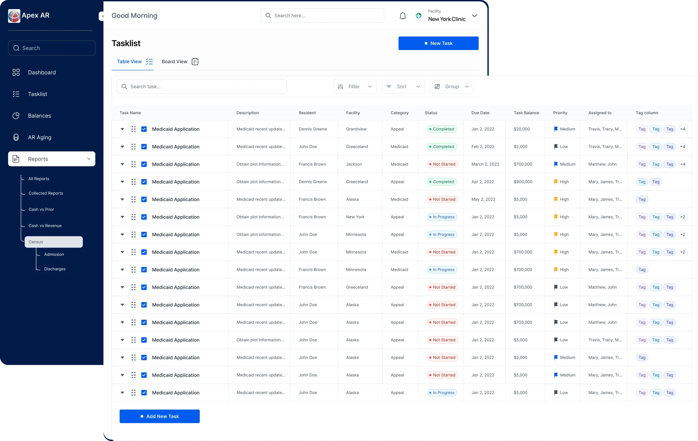
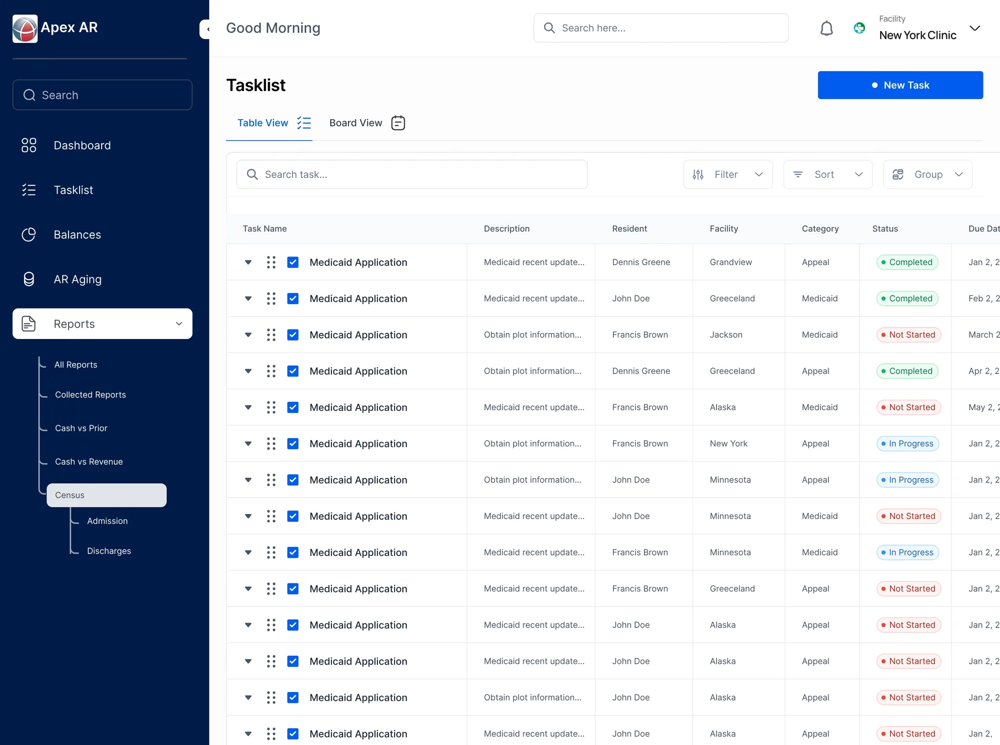
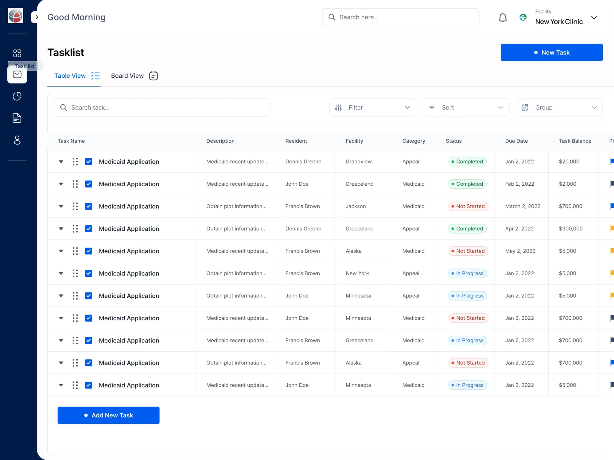
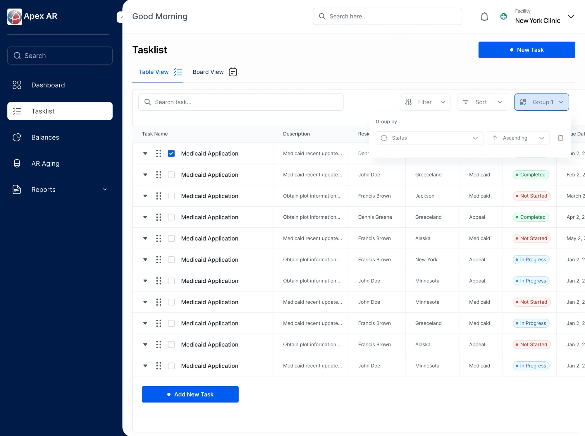
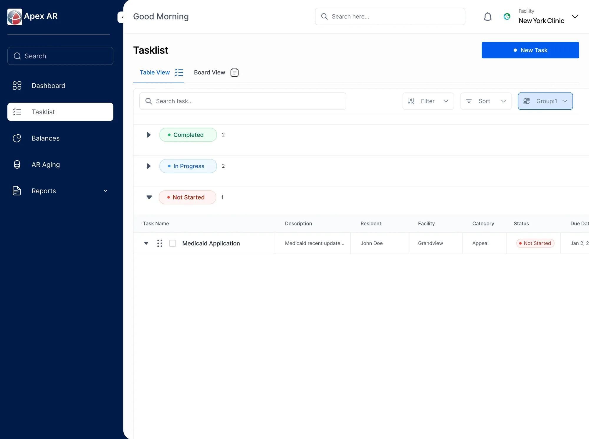
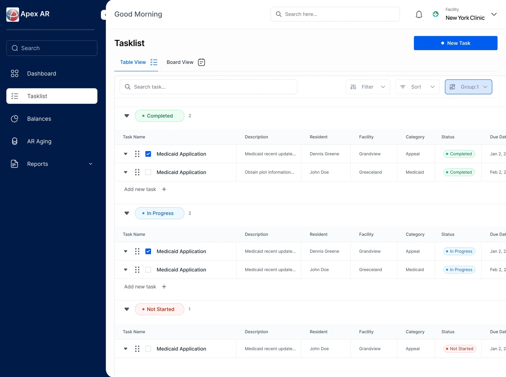
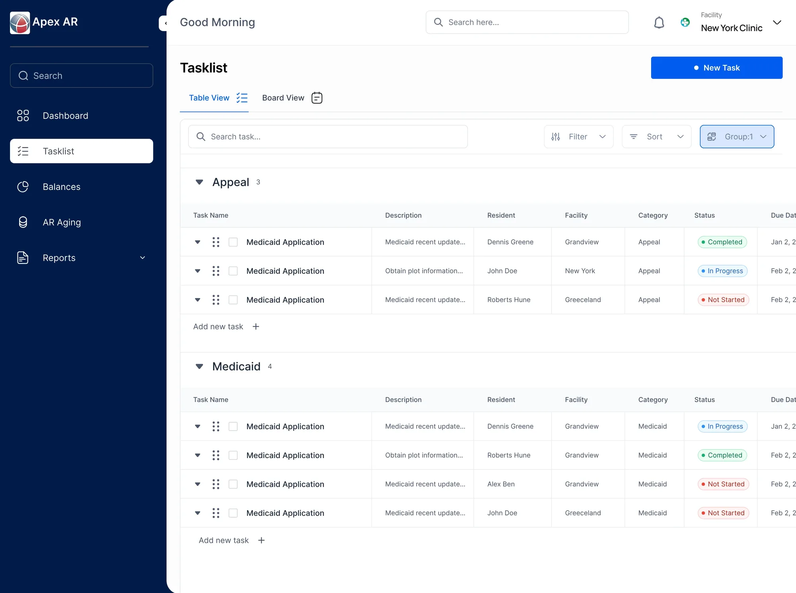
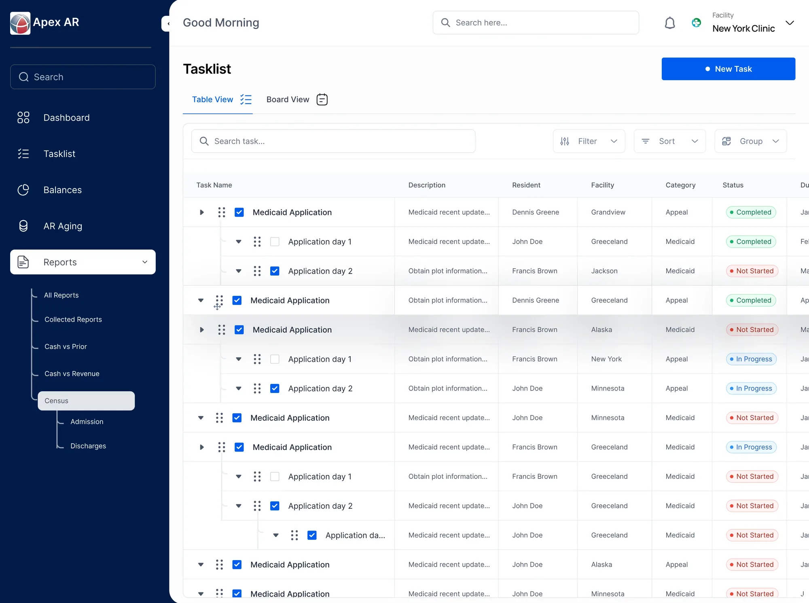
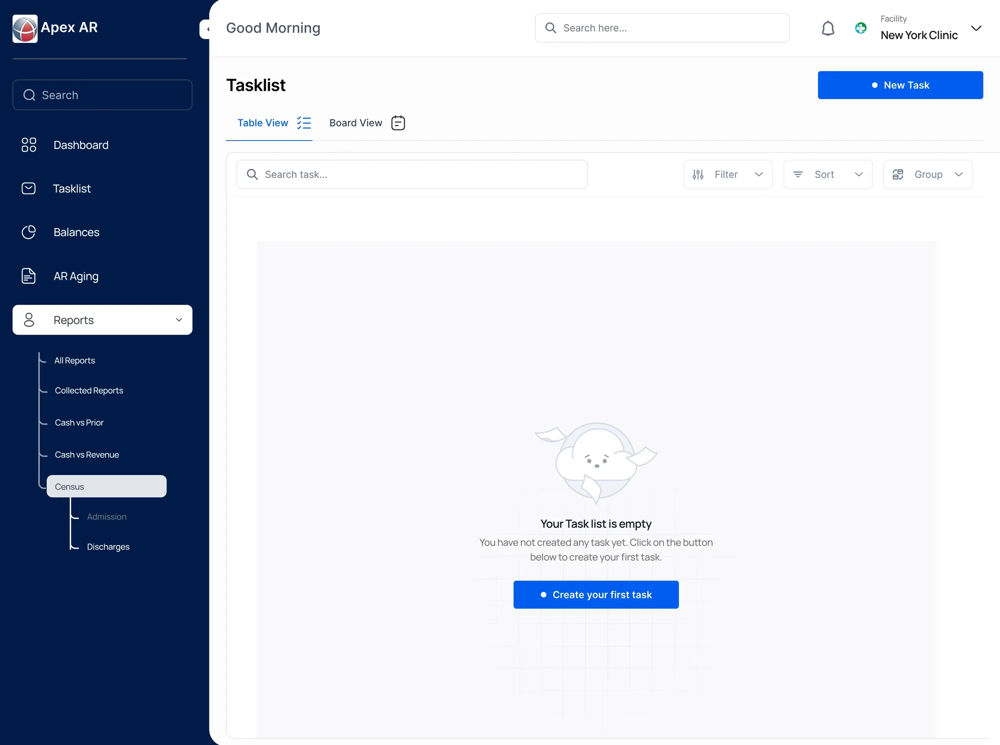
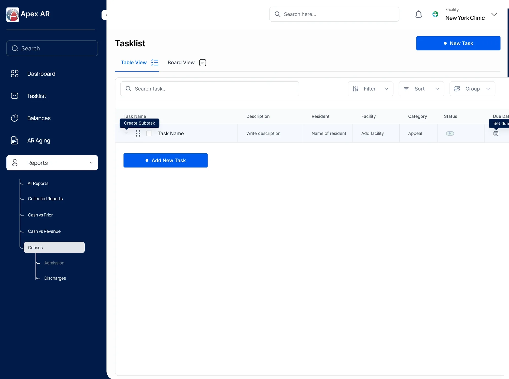

Apex Dashboard
One list, many ways in.
An early dashboard exploration for keeping operational work visible, structured and easy to act on.
- Project
- Dashboard exploration
- Focus
- Task management
- Design
- Table, grouping & states

Giving a busy worklist
a clearer shape.
The task list keeps work, its details and the actions around it on one surface. The hierarchy keeps rows readable even when the table holds a lot.
When the table needs more room, the sidebar folds away and more columns come into view.


One list, different ways
to see the work.
The same tasks can be grouped in more than one way. Grouping by status supports a quick progress scan; grouping by category brings related work together.
Both views use the same row pattern, so changing the lens doesn’t change how the interface feels.




Details stay close
to the work.
Subtasks open in place, under the task they belong to. People can move from an overview into detail without losing their position in the list.

A clear first step.
When there is nothing yet, the empty state points to one action. A new task row then appears, ready to fill in, with a quick way to add a subtask.


Simple patterns,
repeated.
I designed the system around simple, repeatable patterns, so a complex list could support both a quick overview and closer task-by-task work.